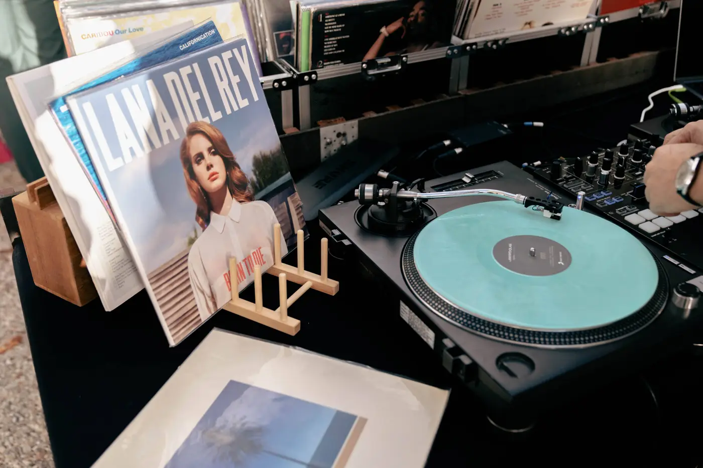
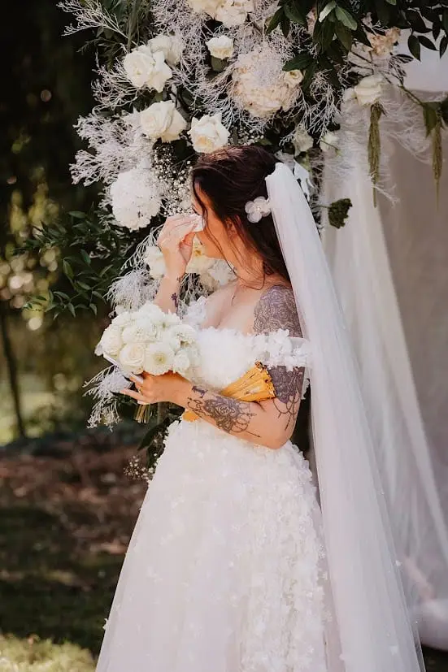
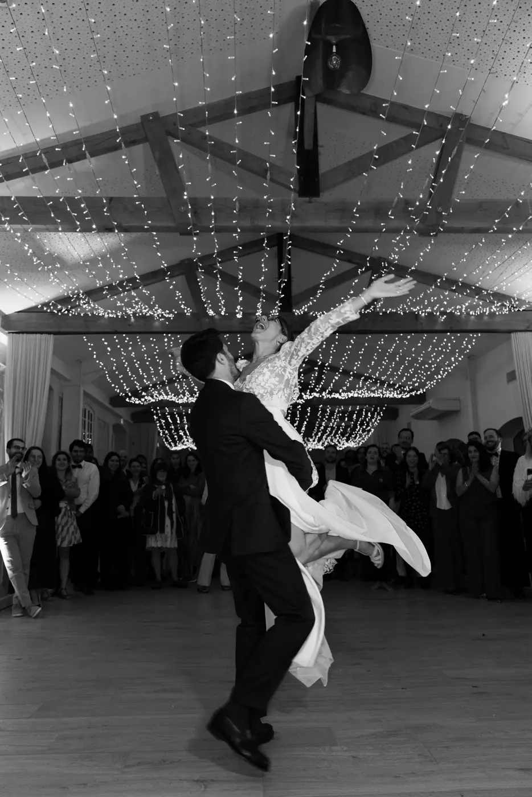
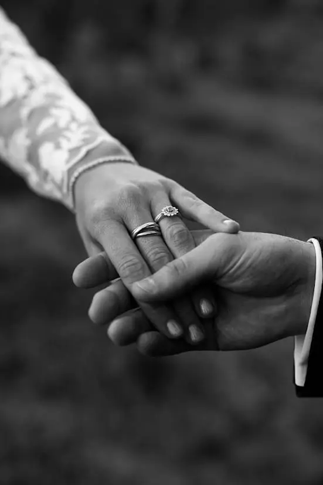

Le jour de votre mariage est unique. Vous passez des mois à imaginer chaque détail : le lieu de réception, la décoration, les fleurs, le menu, la scénographie, les animations et bien sûr la musique. Pourtant, malgré toutes les possibilités qui existent aujourd'hui, la majorité des couples choisissent encore des chansons déjà existantes pour accompagner les moments forts de leur journée.
Mais avez-vous déjà imaginé vivre une expérience totalement différente ?
Et si, au lieu de choisir une chanson connue parmi des milliers d'autres, vous faisiez appel à un artiste pour créer une œuvre unique, entièrement inspirée de votre histoire ?
Une chanson sur mesure représente bien plus qu'une simple animation de mariage. C'est une création artistique, un souvenir intemporel et une source d'émotion qui accompagnera votre couple pendant de nombreuses années.
À Bordeaux comme partout en Nouvelle-Aquitaine, cette tendance séduit de plus en plus de futurs mariés à la recherche d'originalité et d'authenticité.
Pourquoi choisir une chanson personnalisée pour son mariage ?
Aujourd'hui, les couples souhaitent vivre des expériences qui leur ressemblent.
La personnalisation est devenue l'un des grands marqueurs du mariage moderne. Les futurs mariés veulent raconter leur histoire, partager leurs émotions et offrir à leurs proches des souvenirs uniques.
Une chanson personnalisée répond parfaitement à cette attente.
Contrairement à un morceau connu, cette chanson est créée spécialement pour vous. Chaque mot, chaque note et chaque émotion sont pensés autour de votre parcours.
La personnalisation permet ainsi de transformer un simple moment musical en véritable expérience émotionnelle.
Et finalement, n'est-ce pas ce que recherchent tous les couples lors de leur mariage ?

Une chanson qui ne ressemble à aucune autre
Chaque histoire d'amour est différente.
Peut-être vous êtes-vous rencontrés lors d'un voyage. Peut-être grâce à des amis communs. Peut-être au détour d'un événement totalement inattendu.
Tous ces souvenirs deviennent la matière première de la création.
L'artiste s'inspire de votre rencontre, de vos anecdotes, de vos projets et de vos émotions pour composer une chanson unique.
Cette personnalisation totale donne naissance à une œuvre qui ne pourra jamais être reproduite à l'identique.
C'est précisément cette originalité qui touche autant les invités.
Lorsque les premières paroles résonnent, chacun comprend immédiatement qu'il assiste à un moment exceptionnel.
Comment créer une émotion forte auprès de ses invités ?
Les plus beaux souvenirs de mariage sont souvent liés aux émotions ressenties.
Les invités oublient parfois certains détails de décoration ou certaines animations spectaculaires. En revanche, ils se souviennent très longtemps des moments qui les ont touchés.
Une chanson créée spécialement pour les mariés possède cette capacité rare à générer une émotion sincère.

Pourquoi ?
Parce qu'elle raconte une histoire vraie. Parce qu'elle parle d’amour. Parce qu'elle évoque des souvenirs partagés. Parce qu'elle permet aux proches de découvrir certaines facettes du couple.
Cette émotion authentique crée une connexion immédiate entre les mariés et leurs invités.
Une animation originale qui marque les esprits
Les futurs mariés recherchent souvent une animation capable de surprendre leurs invités.
Photobooth, feux d'artifice, spectacles, jeux interactifs : les possibilités sont nombreuses.
Mais combien d'animations parviennent réellement à créer une émotion durable ?
Une chanson personnalisée se distingue justement par son originalité.
Elle ne repose pas sur l'effet de surprise uniquement.
Elle raconte une histoire. Elle crée du lien. Elle suscite des réactions sincères.
C'est pourquoi cette animation est souvent considérée comme l'un des moments les plus mémorables de la réception.
À quel moment diffuser votre chanson ?

L'un des grands avantages de cette animation est sa flexibilité.
Votre chanson peut intervenir à différents moments du mariage :
- pendant la cérémonie laïque
- lors de l'échange des voeux
- durant le cocktail
- au moment du dîner
- avant le dessert
- pour l'ouverture de bal
- lors de la soirée dansante
Chaque option génère une émotion différente. Souhaitez-vous créer un moment intimiste ?
Ou préférez-vous surprendre l'ensemble de vos invités ?
La réponse dépendra entièrement de votre personnalité et de l'ambiance recherchée.
Comment travaille un artiste spécialisé dans la personnalisation musicale ?
Beaucoup de couples pensent que créer une chanson sur mesure est un processus compliqué.
En réalité, tout commence par un échange humain. L'artiste prend le temps de découvrir votre histoire.
Il s'intéresse à votre rencontre, à vos souvenirs, à vos valeurs et aux moments importants de votre parcours. Cette phase est essentielle car elle permet d'alimenter la personnalisation de la future chanson.
À partir de ces éléments, l'artiste compose ensuite les paroles et la mélodie. Le résultat est une création profondément personnelle et chargée d'émotion.
J'ai eu l'occasion de rencontrer Maxime Bel'Air qui est un chanteur et musicien à Bordeaux. Il réalise ce type de prestation en transformant des bouts de vie en chanson. Voici le lien vers son Instagram :
https://www.instagram.com/maxime_bel_air?igsh=Njd2dDcyZWluaWJt
Je conseillerais de privilégier l'émotion à l'effet spectaculaire
En tant que wedding planner à Bordeaux, je conseillerais toujours aux futurs mariés de se poser une question essentielle :
Quelle émotion souhaitons-nous faire vivre et ressentir à nos invités ?
Aujourd'hui, de nombreuses animations existent pour divertir les convives. Pourtant, celles qui restent gravées dans les mémoires sont souvent les plus sincères.
Une chanson créée par un artiste possède cette force particulière.

Elle combine originalité, personnalisation et émotion.
Elle raconte votre histoire de manière élégante et authentique.
Je constate d'ailleurs que les couples qui choisissent cette animation recherchent rarement l'effet "waouh" à tout prix. Ils souhaitent avant tout créer un moment vrai, profondément humain et chargé de sens.
C'est précisément ce qui rend cette expérience si précieuse.
Pourquoi cette tendance séduit-elle autant à Bordeaux et en Nouvelle-Aquitaine ?
Les mariages évoluent. À Bordeaux et en Nouvelle-Aquitaine, les futurs mariés accordent de plus en plus d'importance à la personnalisation de leur événement.
Cette évolution se retrouve dans :
- les cérémonies laïques sur mesure
-les expériences immersives
-les scénographies personnalisées
-les animations originales
-les créations artistiques exclusives
La chanson personnalisée s'inscrit parfaitement dans cette recherche d'authenticité.
Elle apporte une véritable valeur émotionnelle à la journée.
Une chanson qui continue à vivre après le mariage
Contrairement à la plupart des animations, une chanson ne disparaît pas une fois la réception terminée.
Vous pourrez l'écouter dans quelques mois, dans quelques années, lors de vos anniversaires de mariage avec vos enfants et avec vos proches.
Chaque écoute ravivera instantanément les émotions vécues lors de cette journée exceptionnelle.
C'est ce qui fait toute la différence entre une simple animation et un véritable patrimoine émotionnel.

L'originalité au service de votre histoire
Dans un monde où tout semble parfois standardisé, la personnalisation devient un luxe.
Choisir une chanson créée par un artiste, c'est affirmer votre singularité. C'est également mettre en lumière ce qui rend votre couple unique.
C'est choisir l'originalité sans tomber dans l'excès et offrir à vos invités une émotion sincère.
Et c'est surtout créer un souvenir qui vous accompagnera toute votre vie.
En bref,
Faire appel à un artiste pour composer votre propre chanson est bien plus qu'une simple animation de mariage.
C'est une démarche profondément personnelle qui mêle émotion, personnalisation et originalité.
À Bordeaux comme partout en Nouvelle-Aquitaine, cette tendance séduit les couples qui souhaitent vivre un mariage authentique et créer des souvenirs durables.
Parce qu'au fond, les plus beaux moments sont souvent ceux qui racontent une histoire.
Et si la vôtre méritait sa propre chanson ?
Lovely Day Event c'est plusieurs types de prestations
L'organisation de mariage
Je vais intervenir sur toutes les étapes de vos préparatifs et vous guider dans vos choix. Je suis force de proposition pour que votre mariage ne ressemble qu’à vous.
Décoration de mariage
Créative et passionnée, je suis certifiée Wedding Designer et je conçois une ambiance scénographique qui correspond au thème de votre mariage.
Coordination le jour J
Je serai le chef d'orchestre pour gérer les différents prestataires, la mise en place de votre décoration et le déroulement de cette belle journée.